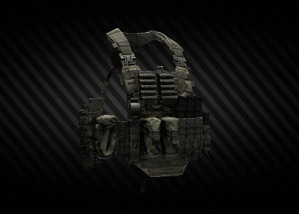

Descripción
El sistema táctico "Chest-Rig" se puede usar como una pieza independiente del equipo o como una adición a la armadura corporal sin el sistema MOLLE. Adecuado para instructores de entrenamiento de combate, unidades de fuerzas especiales. Recon preset en camuflaje A-TACS FG. Fabricado por Stich Profi